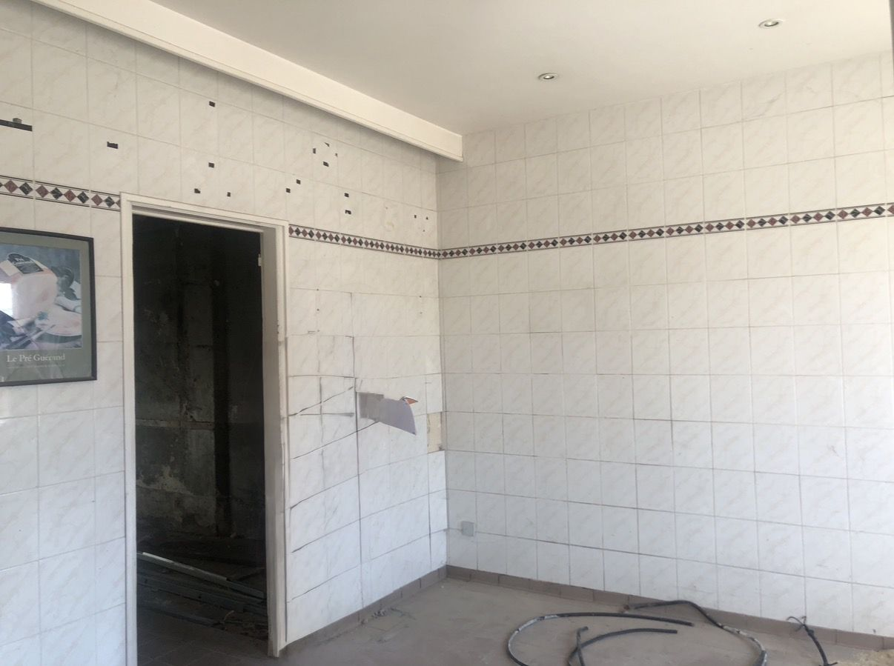
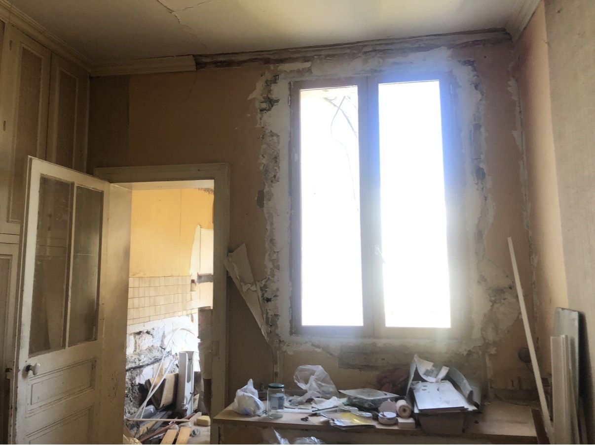
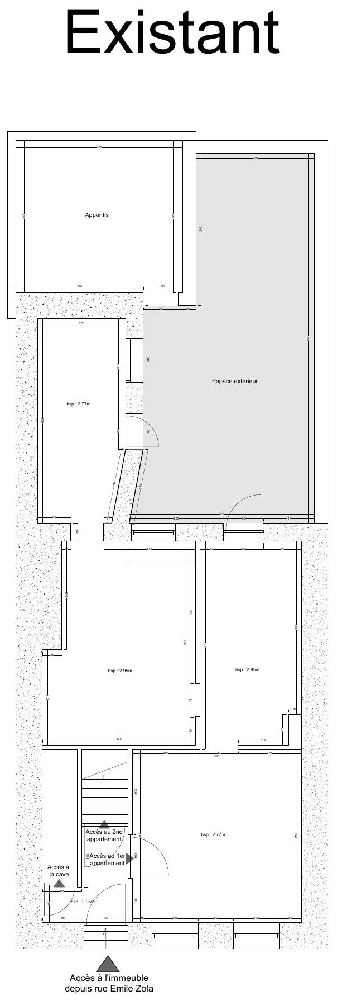
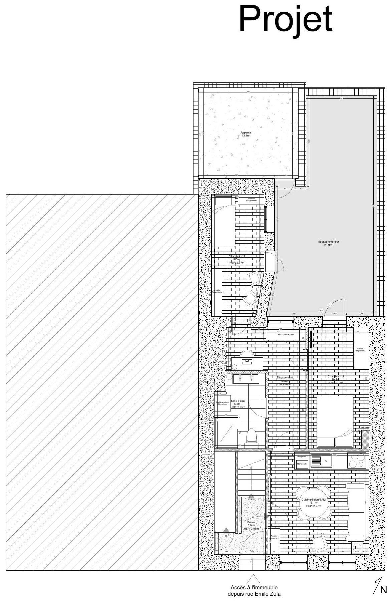
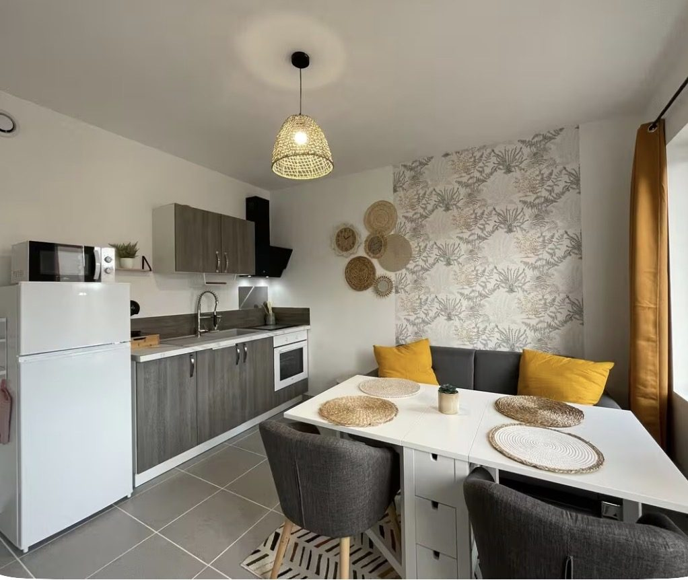
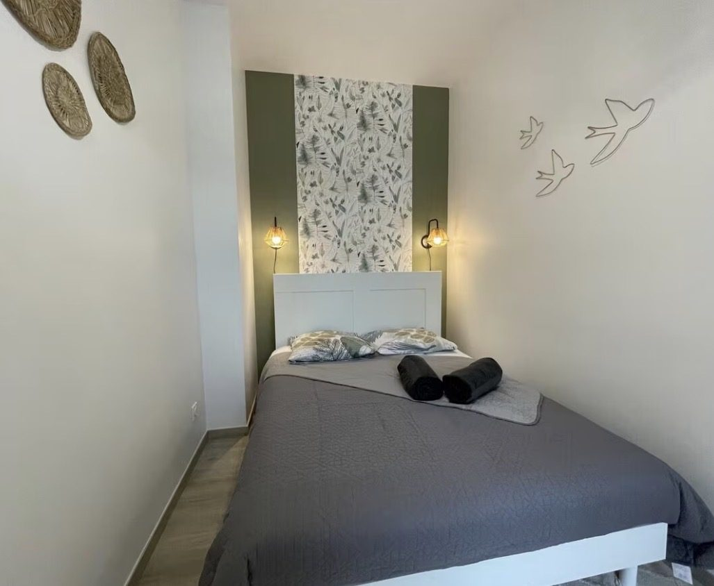
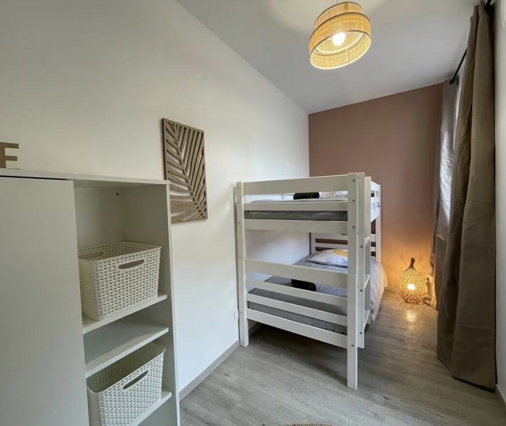

Ce projet porte sur la transformation d'une ancienne boucherie, rue Émile Zola à Sens, en deux appartements. La distribution existante — commerce en rez-de-chaussée et pièces annexes en profondeur — est entièrement revue pour créer deux logements distincts, chacun organisé autour d'un séjour-cuisine, d'une ou deux chambres et d'une salle d'eau.
Le projet conserve l'accès existant depuis la rue Émile Zola et l'accès à la cave, tout en valorisant l'espace extérieur en cœur d'îlot (près de 29 m²) et un appentis attenant.
- Lieu
- Rue Émile Zola, Sens
- Année
- 2022
- Programme
- Transformation d'un commerce en 2 logements
- Mission
- Conception, suivi de travaux, décoration
- Surface
- À préciser
- Statut
- Travaux achevés




Après travaux
LIVRÉ — 2022


Projet suivant
Chelles — Décoration d'un appartement neuf